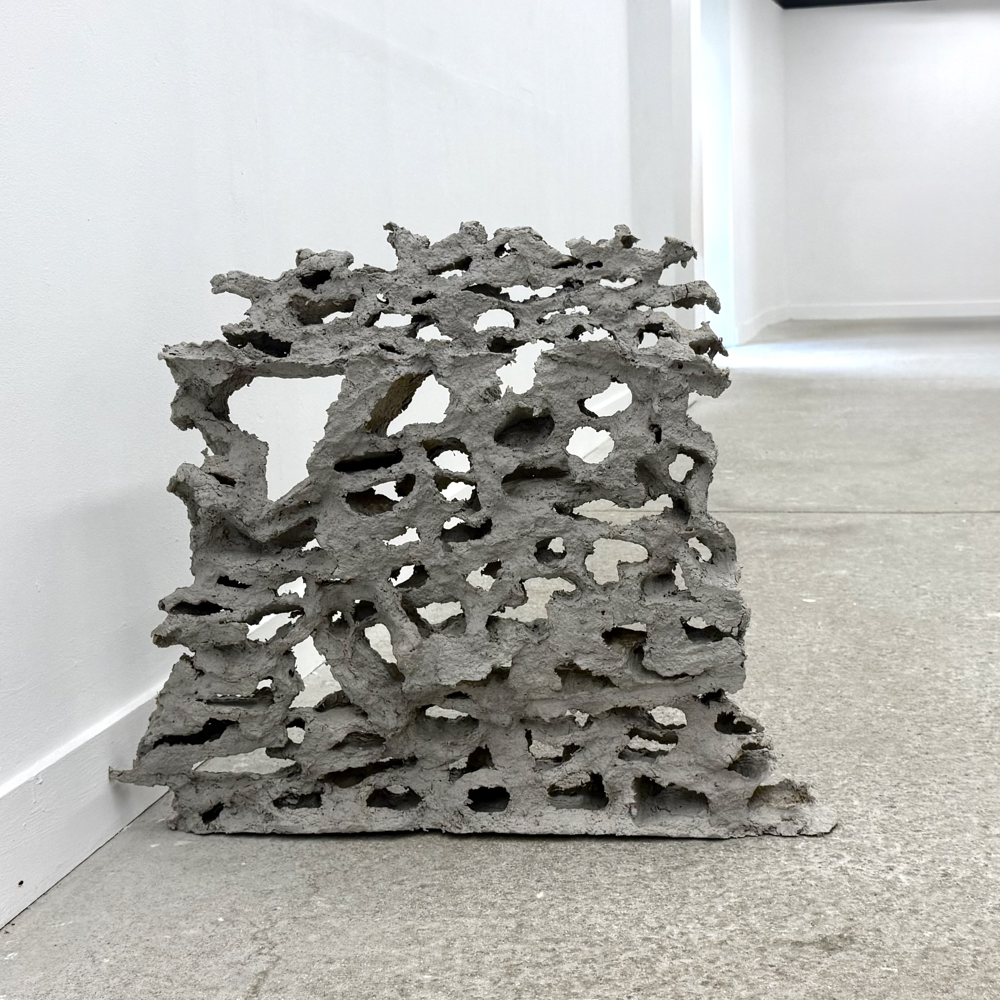
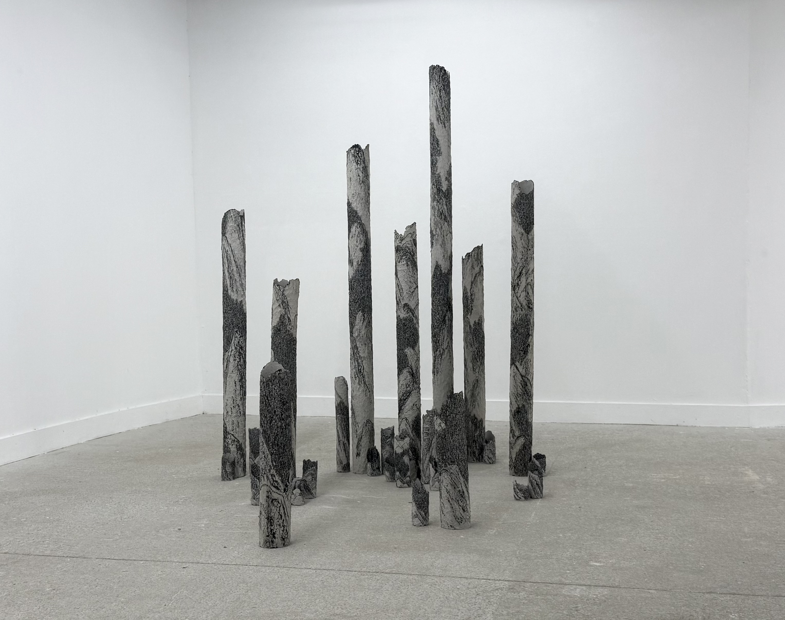
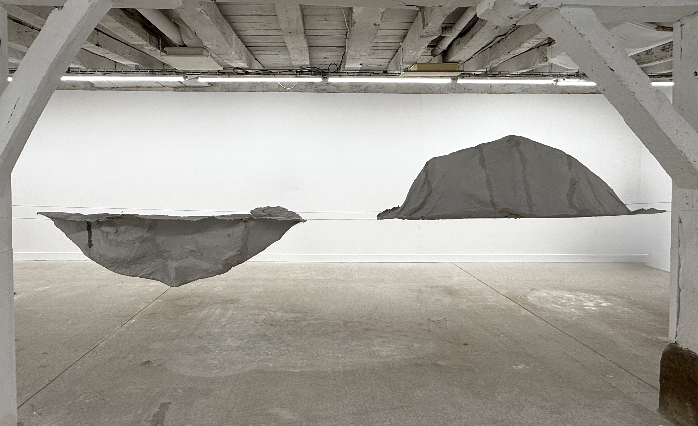
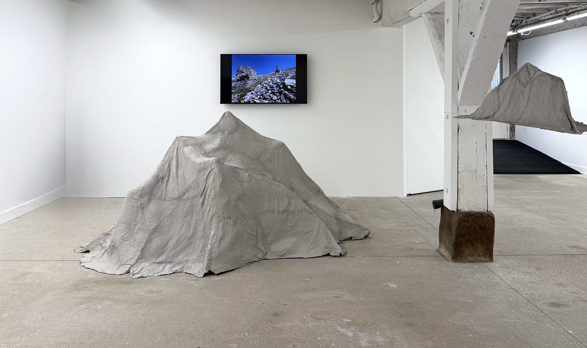

II. MUR →
III. ORGUE →
IV. DEUX MONTAGNE →
V. CHEMIN →Une marche dans la montagne
L’inspiration de ce projet vient d’une expérience de marche en montagne. La marche n’est pas seulement une activité physique, mais une manière de percevoir. Le souffle et le pas suivent les variations du relief ; le corps s’ajuste au rythme de la nature.
Comme l’a écrit Maurice Merleau-Ponty, la perception n’est pas une simple vision, mais une relation incarnée entre le corps et le monde. Dans la marche, mes sens se sont mêlés à la respiration de la montagne, à la texture des roches, aux changements de vent et de brouillard.
J’ai utilisé le papier comme matériau principal. À la fois fragile et résistant, il porte des strates et des empreintes complexes. Ses fibres et textures évoquent le brouillard et la roche des montagnes. Le support n’est pas un simple médium, mais une manière de prolonger la pensée du monde. Ici, le papier devient un traducteur de la montagne, une surface sensible capable de garder la mémoire de la marche. La fragilité de la matière représente la fragilité de la nature.
Comme l’a écrit Maurice Merleau-Ponty, la perception n’est pas une simple vision, mais une relation incarnée entre le corps et le monde. Dans la marche, mes sens se sont mêlés à la respiration de la montagne, à la texture des roches, aux changements de vent et de brouillard.
J’ai utilisé le papier comme matériau principal. À la fois fragile et résistant, il porte des strates et des empreintes complexes. Ses fibres et textures évoquent le brouillard et la roche des montagnes. Le support n’est pas un simple médium, mais une manière de prolonger la pensée du monde. Ici, le papier devient un traducteur de la montagne, une surface sensible capable de garder la mémoire de la marche. La fragilité de la matière représente la fragilité de la nature.
×